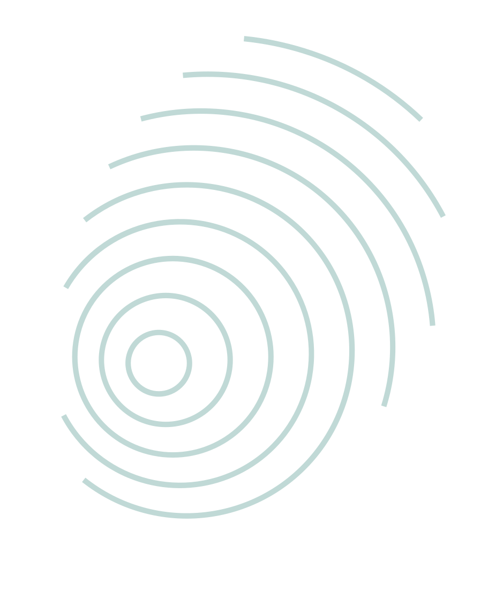

Module 3a
Building Your Self-Management Skills & Confidence
Credits: Kevin Li BSc MSPH, Aakankshya Kharel BSc
Dr. Marlene Dytoc MD PhD FRCPC
Designed by: Danting Zheng BSc Undergraduate

You're in Charge: Introduction to Self-Efficacy
When it comes to eczema, self-efficacy means feeling confident that you can manage your skin, navigate challenges, and make informed decisions about your care.
You can't always control every flare-up, but you can control your approach, your knowledge, and your actions. Building self-efficacy helps you do just that.
Self-efficacy is a cornerstone of behavior change. Believing you can succeed makes you more likely to try, persist, and achieve your health goal!

Progress Isn't a Straight Line: Normalizing Setbacks
Managing eczema is a journey with ups and downs. Flare-ups will happen.
- Reframe the setback: instead of "I messed up," try "This is a learning opportunity."
- Reflect, don't blame: use setbacks as data. What might have triggered this? What helped in the past?
- Return to your routine: gently pick one thing to restart today. Don't wait for the "perfect" moment.
- Be kind to yourself: progress includes patience and self-compassion, not just persistence.